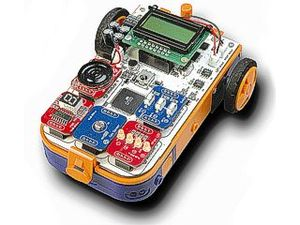

Contenido
[ocultar]Introducción
El Mavin es un robot móvil, que se desplaza mediante dos ruedas motrices y está dotado de sensores para reaccionar ante estímulos del medio. Es un robot orientado para iniciarse en el mundo de la robótica, la mecánica es muy sencilla y el software es mediante cajas contextuales.
Tiene muchos gadgets pulsador, zumbador, display, sensores IR, de sonido,... que le permiten hacer bastantes cosas.
El software de cajitas permite usar todos los sensores de una forma sencilla y rápida.
Comparado con el Skybot cumple una misión distinta:
- Mientras el Skybot te inicia y además te deja la posibilidad de crecer el Ma-vin está más orientado a juguete, de manera que intentar salirte de él para hacer tus propias modificaciones se hace más complejo. Por el contrario, dispone de un software de programación con cajitas que el Skybot no tiene.
- En el Skybot tenemos los dos modos de funcionamiento, el autónomo y el controlado desde el PC. En el Ma-vin por el contrario sólo disponemos del autónomo.
- El Skybot es abieto y multiplataforma, el Ma-vin no.
Por eso, nuestra recomendación es usar el Ma-vin en talleres donde se quieran mostrar diferentes tipos de sensores y actuadores, programado de una forma visual a modo de cajitas. Digamos que es el primer baño en robótica.
El Skybot, permite un paso más, adentrarte en el mundo de la programación del robot a bajo nivel (También desde C), y tener un conocimiento más cercano de la relación entre un sensor, la electrónica y el programa final. El Skybot permite aprender a nadar.
.
Características
|
Ejemplos de programación
- Siguelineas.izi Ejemplo sencillo de un siguelineas
Videos
Video promocional de Hitec:

Video del robot siguiendo una linea negra con nuestro ejemplo:

Enlaces
Autores
Licencia
| |
Créditos
- A Alejandro Alonso por dejarnos un Ma-vin para poder jugar con él.
Noticias
- 13/Agosto/2008. Comenzada esta página.